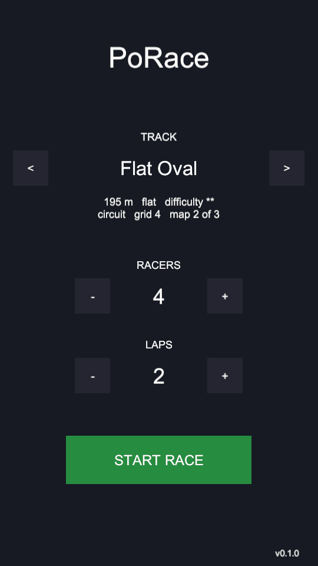
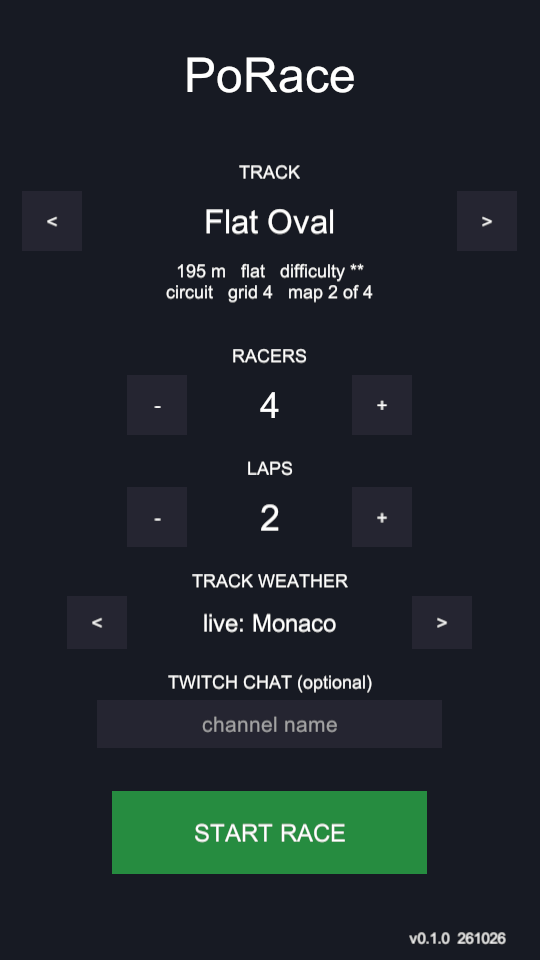
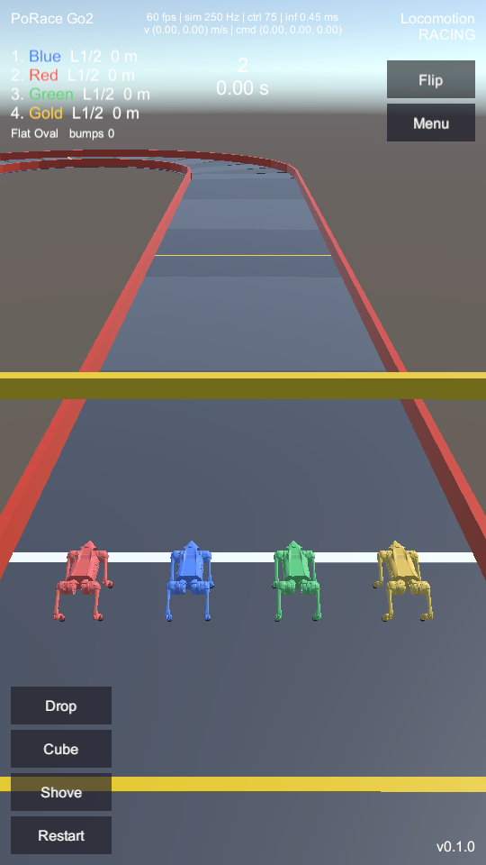
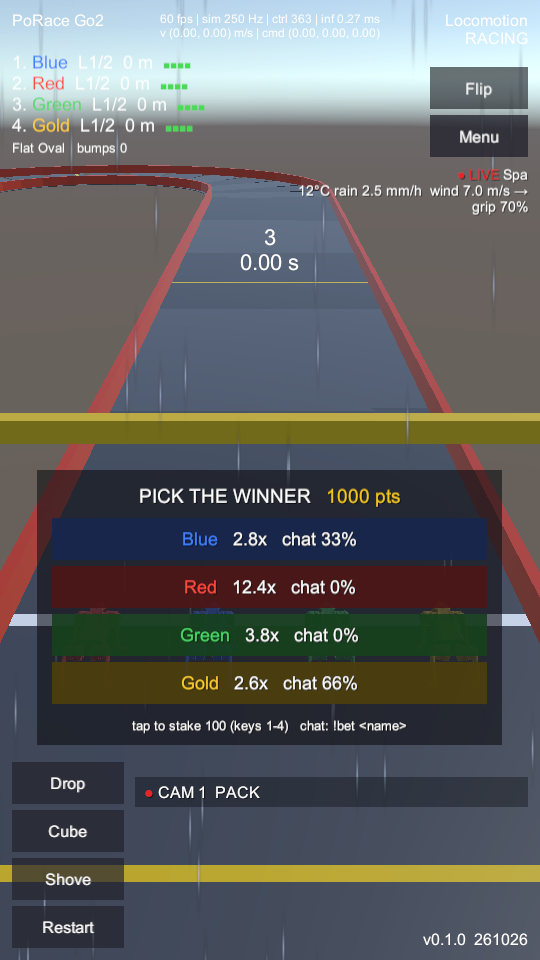
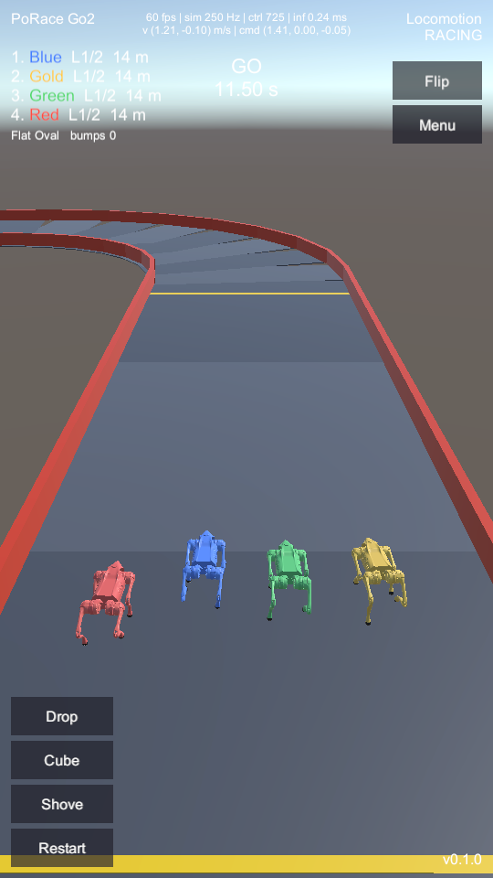
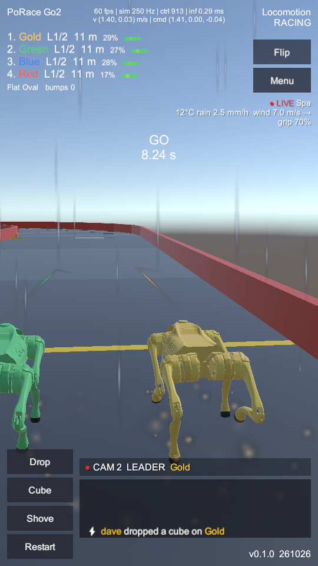
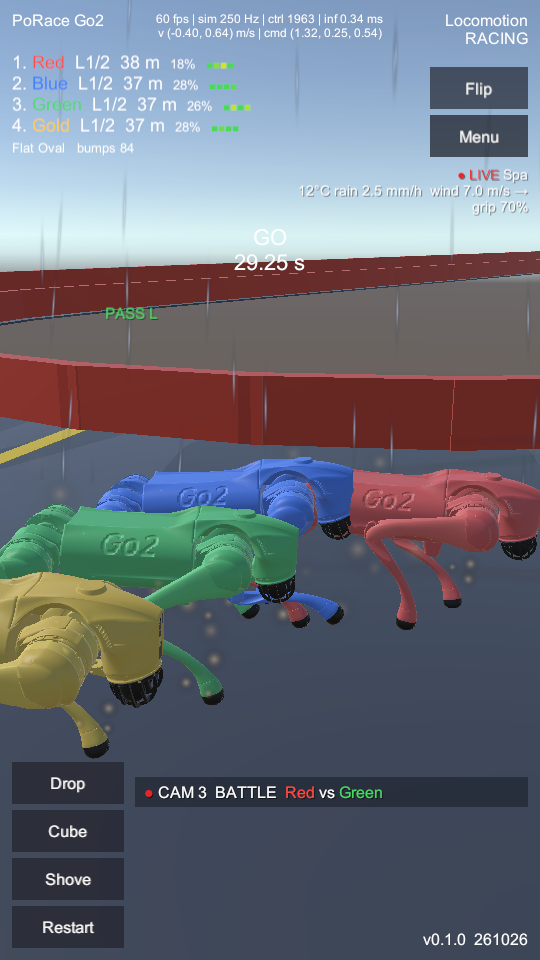
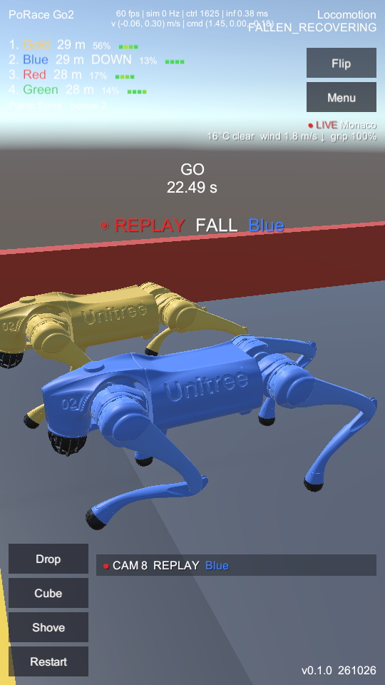
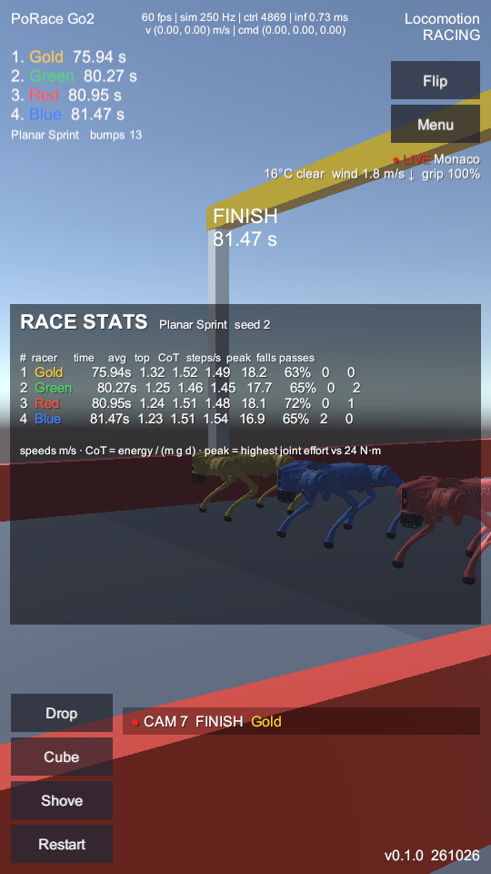
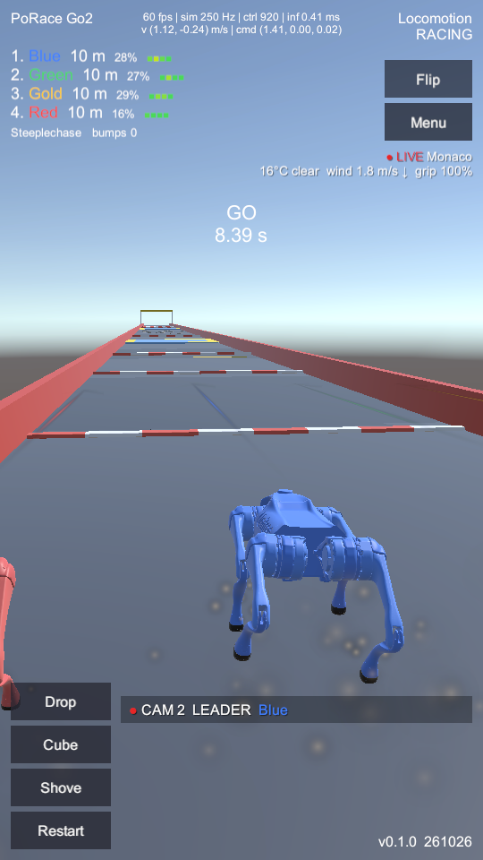

PoRace UI changes: broadcast layer
Build 261026, Windows player at 540 × 960 (portrait). Before = build from the previous commit (with the SSAO render fix so it draws at all); after = this change. Red numbers mark what changed; the list under each pair explains them.
1. Pre-race menu


123- Track weather picker: live conditions from one of seven real circuits (Open-Meteo), or off. Remembered between sessions.
- Optional Twitch channel: chat drives hazards (!drop / !cube / !shove) and bets (!bet). Read-only, no login.
- Build watermark: version plus YYMMDD build date, bottom-right (also on every race HUD).
2. Countdown: predictions and conditions


123 45- Pick-the-winner panel: odds from this race's speed draw and each racer's win record, tap (or keys 1–4) to stake 100 points, chat split from !bet.
- Strain marks per racer, one per leg (FL FR RL RR), green → yellow → red with joint effort against the 24 N·m limit.
- Live weather widget: circuit, temperature, rain, wind arrow, and the grip the track now has. Rain also draws a particle curtain and dims the sun.
- Race clock moved down from the top centre so the wider standings rows never run into it.
- Director lower third: current camera and its subject; tap to switch auto / manual.
3. Racing


123 45- Live win chance per racer, from remaining distance, speed and whether it is down.
- Automatic director: LEADER, PACK, TRACKSIDE, BATTLE, OVERHEAD, INCIDENT, FINISH shots chosen from race events.
- Ticker: viewer hazards, weather, form guide, redlines, bet results.
- Intent arrows: where each racer is steering (racing line plus its tactical offset).
- Dust from foot strikes (and footstep / servo sounds, not visible here).
4. Tactics, incident replay, finish

12
34
5- Intent tag over a racer while it passes (PASS L / PASS R), avoids a fallen racer (AVOID) or covers an attacker (BLOCK).
- BATTLE: side-on shot of the two racers involved in an overtake.
- REPLAY banner. The race is paused, the last 5 s play back at 0.6× from an orbiting camera, then the race resumes exactly where it stopped.
- Physics really is paused during the replay (sim 0 Hz).
- Stats card: time, average and top speed, cost of transport, cadence, peak joint effort, falls and passes. The same numbers go to a JSONL log and, if configured, Azure Table Storage.
5. New map: Steeplechase

12- Hurdles 3–8 cm high, striped beams modelled in Blender (
tools/blender/steeple_props.py); collision is plain MuJoCo boxes. - Steps (yellow-edged slabs) and a rubble field further down the 100 m course.
Where things moved
| Element | Before | After |
|---|---|---|
| Race clock | Top centre, under telemetry | Lower (y −300 on the 720 × 1280 canvas), clear of standings and weather |
| Standings rows | Place, name, lap, distance | + live win chance, + four strain marks, + RED when redlining |
| Bottom-right text | v0.1.0 | v0.1.0 261026 (build date watermark) |
| Right column | Mode / state, Flip, Menu | + live weather block under Menu |
| Bottom, right of buttons | Empty | Director label and ticker |
| Countdown | 3 s | 10 s in interactive play (betting window); headless tests keep 3 s |